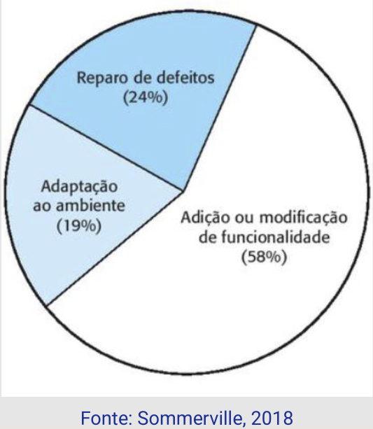
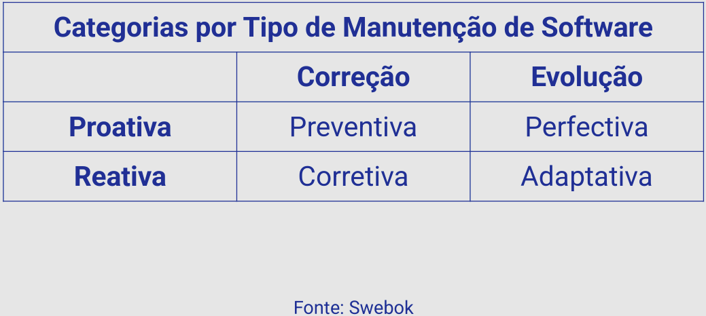

Disciplinas
VERIFICAÇÃO, VALIDAÇÃO E TESTE DE SOFTWARE. Concluído
Materiais
[UFMS Digital] Verificação, Validação e Teste de Software - Módulo 4 - Unidade 1
Prof° ministrante: Leonardo Souza Silva.
Ao longo da disciplina...
- Entendemos o que é Qualidade de Software;
- Discutimos as atividades de Verificação, Validação e Teste de Software, e
- Compreendemos a importância da Documentação de Teste de Software no contexto do processo de desenvolvimento.
Manutenção de Software.
Até o momento, discutimos atividades realizadas ANTES da entrega do software.
“Não importa onde você se encontre no ciclo de vida do sistema, o sistema se modificará, e o desejo de mudá-lo persistirá em todo o ciclo de vida dele” (Pressman)
- Manutenção se caracteriza por ocorrer APÓS a entrega do software.
- Mesmo com qualidade, é preciso realizar manutenção;
- Manutenção não é corrigir defeitos;
- Aproximadamente 24% do esforço é correção de defeitos.
- Maior esforço: Preventiva e Perfectiva.
- Custo é maior do que o custo de desenvolvimento.
Distribuição do Esforço — Manutenção

...
Manutenção de Software - Definição
Processo de modificar um sistema de software ou componente, depois da entrega, para corrigir falhas, melhorar desempenho ou outros atributos, ou adaptar a mudanças no ambiente.
(IEEE Std 620.12)
Tipos de Manutenção de Software.
- Correção
- Corretiva,
- Corrige defeitos reportados ou identificados a partir do uso do software.
- Emergencial.
- Em alguns casos, é preciso reparar/restaurar um software para manter seu funcionamento até que a manutenção corretiva seja realizada.
- Preventiva
- Melhoram a manutenibilidade do software, buscam evitar problemas que poderiam impedir o funcionamento do software.
- Evolução
- Adaptativa, e
- Responde a mudanças no ambiente ou domínio do problema, por exemplo, alterações na legislação ou a evolução de um SO.
- Perfectiva
- Promove melhorias no software, tanto no aspecto funcional como não funcional.

...
Engenharia Reversa.
Processo de analisar o software visando construir uma documentação (descrição de componentes e relacionamentos), diante da ausência de documentos atualizados ou mesmo de documentação do projeto.
- Obter uma descrição de alto nível a partir do código.
Reengenharia.
- Envolve examinar um software existente, que possua ou não documentação de projeto, visando realizar uma nova implementação.
- Atualização de tecnologia;
- Estender a expectativa de uso do sistema;
- Melhorar futuras manutenções;
- Questões contratuais.
Refatoração (Refactoring).
“É uma mudança na estrutura interna do software visando torná-lo mais fácil de entender ou modificar sem alterar o seu comportamento externo”
(Martin Fowler)
Gerenciamento de Configuração de Software.
- As atividades de manutenção acontecem muitas vezes em paralelo às atividades de desenvolvimento.
- Arte de identificar, organizar e controlar modificações no software que está sendo construído (Babich).
- Maximizar a produtividade e minimizar ocorrência de erros.
Normas relacionadas.
- NBR ISO/IEC 12207
- Estrutura para processos de ciclo de vida de software.
- ISO/IEC 14764
- Gerenciamento do processo de manutenção.
- IEEE 1219
- Processo iterativo para o gerenciamento e execução de atividades de manutenção de software.
Desafios.
- Estabilidade da equipe;
- Responsabilidade contratual;
- Habilidade do pessoal de manutenção, e
- Idade e estrutura do sistema.
Teste de Regressão.
- Não é realizado durante o processo de desenvolvimento.
- Realizado durante a Manutenção de Software.
- Avaliar se defeitos não foram incluídos.
- Mostrar que os novos requisitos, se for o caso, foram implementados adequadamente e que os requisitos anteriormente testados continuam válidos.
Para finalizar...
- Manutenção é um processo que ocorre APÓS a entrega do software.
- Atenção aos desafios associados.
- Apresentamos o Teste de Regressão.